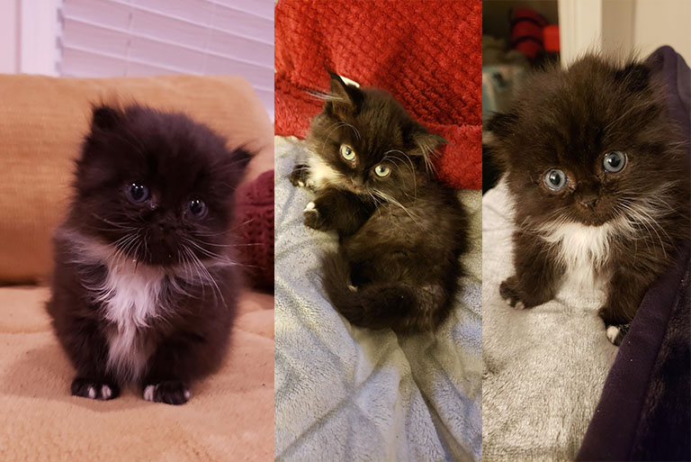
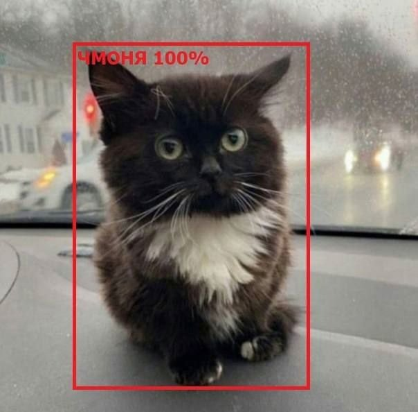

Чмоня (Virgo Cat) – маленький черный котенок, ставший мемом в рунете. На наиболее известном снимке котенок сидит на панели автомобиля.
Оригинальное фото котенка, сидящего на панели машины, появилось на Reddit еще 20 февраля 2021 года. Автор снимка – хозяин питомца, пользователь с ником f3I2g. Настоящее имя кошки (это девочка) – Вирго (Virgo)..
Реддитор и ранее выкладывал снимки своего котенка. Самое ранее фото было опубликовано 2 октября 2020 года. На нем Вирго совсем крошечная.
В апреле 2021 года фото Вирго, сидящей на панели машины, стало вирусным. Его начали публиковать развлекательные сайты в различных подборках. Тогда же стали появляться и первые полноценные мемы. Например, в паблике "Mew News."
В конце декабря 2021 года котенок Вирго стал популярным в рунете. Его фото начали форсить на Дваче и в твиттере. Например, пользователь @antipillz добавил к снимку слово “едем”. Этот твит набрал 6 тысяч лайков и положил начало глобальному форсу.
22 декабря у котика появилась альтернативная кличка – Чмоня. Именно так подписал картинку фильтр, определяющий предметы по фото.
С этого момента кошка Чмоня стала отдельным мемом. Ее фотошопят, помещая в разные вселенные, в шутку отправляют на митинги в Казахстан. Или сравнивают с Большим Шлепой, называя “маленьким русским котом Чмоней”. Пика популярности тренд достиг ко второй неделе января 2022 года.
Чмоня – вирусная кошка и героиня множества мемов. С ней делают как классические “милые” мемы про маленькость, так и постироничные посты или фотожабы.